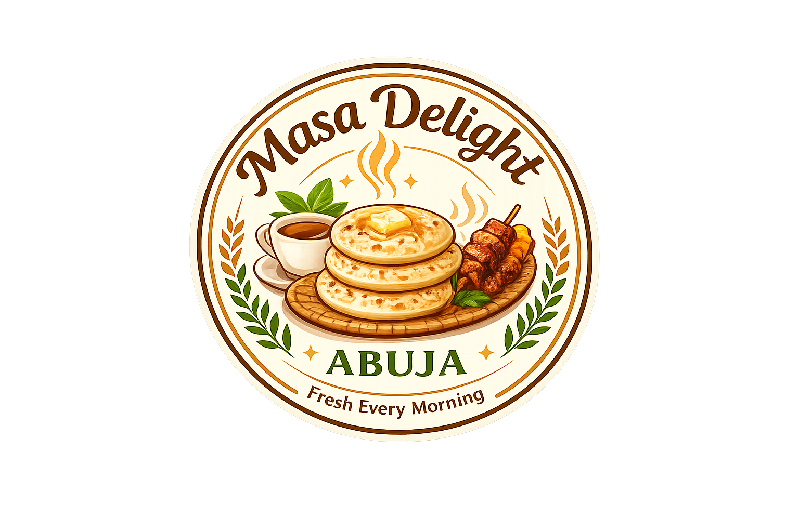
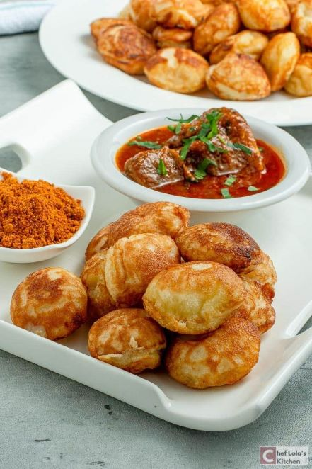
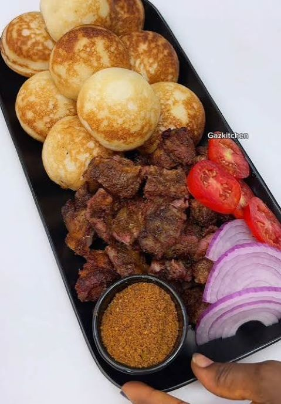
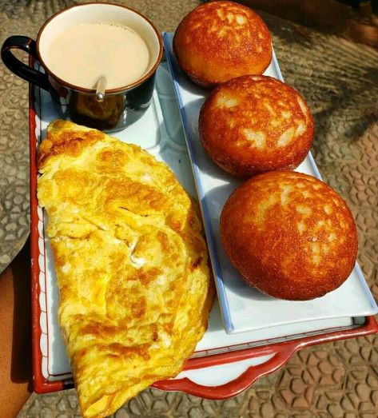
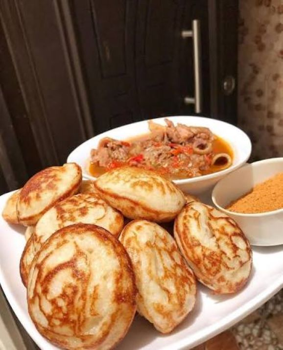

Fresh Every Day
Every batch of masa is freshly prepared each morning using quality ingredients to ensure delicious taste and excellent freshness.

Authentic Northern Nigerian Breakfast & Catering

Welcome to Masa Delight Abuja, your destination for authentic northern Nigerian breakfast. We prepare freshly made masa, delicious soups, suya, grilled meats, tea combinations, and catering services for homes, offices, meetings, and special events throughout Abuja.
Explore Our MenuMasa Delight Abuja is committed to serving freshly prepared, high-quality northern Nigerian meals using carefully selected ingredients. Our goal is to provide affordable, delicious meals with excellent customer service, whether you dine with us or order for delivery.
Every batch of masa is freshly prepared each morning using quality ingredients to ensure delicious taste and excellent freshness.
We believe everyone deserves great food at reasonable prices. Our menu offers satisfying meals for individuals, families, and groups.
We provide catering services for birthdays, weddings, seminars, office meetings, religious gatherings, and other special occasions.



"The best masa I've tasted in Abuja. Fresh, soft, and always served hot."
"Excellent customer service and delicious breakfast. I order for my office almost every week."
"Their catering service made our family celebration stress-free. Everyone loved the food."
Browse our delicious menu and place your order today for breakfast, lunch, catering, or your next special event.
Contact Us
Location:
Garki District, Abuja, Nigeria
Business Hours:
Monday – Sunday
7:00 AM – 9:00 PM
Phone:
55555888
Email:
info@masadelightabuja.com